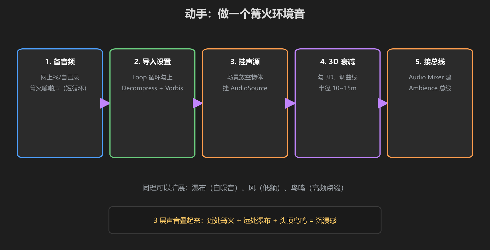
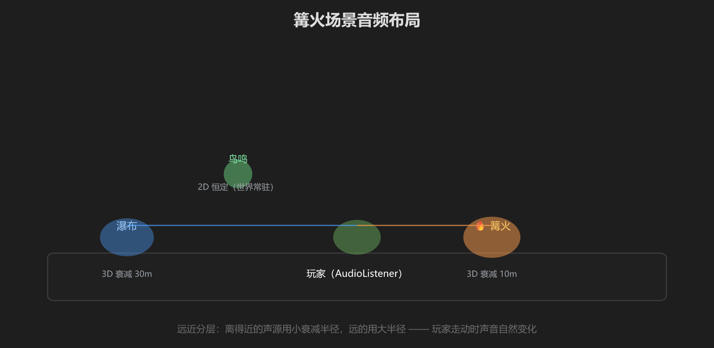

第 5 篇：动手做篝火环境音
把前四篇串起来：找一个音频 → 正确导入 → 摆 3D 声源 → 进总线 → 加一层瀑布、一层鸟鸣，做一个有层次感的环境音系统。

图：五步流程 — 备音频 → 导入设置 → 挂声源 → 3D 衰减 → 接总线
第一步：准备音频
- 找一个篝火噼啪声（循环 10~30 秒即可，网上搜 campfire loop）
- 找一个瀑布/溪流声（white noise 类）
- 找一个鸟鸣（短促、重复）
- 全部放进
Assets/（建议建Assets/_MyWorld/Audio/目录）
第二步：导入设置
- 篝火/瀑布：Loop 勾上、Load Type = Streaming、Compression = Vorbis 70
- 鸟鸣：Decompress On Load、质量 90+
- （篝火音源可 Force To Mono，减体积）
第三步：挂声源
- 在篝火旁放一个空物体
Audio_Fire，挂 AudioSource，拖入篝火音频 - 瀑布旁放
Audio_Waterfall，鸟鸣区域放Audio_Birds
第四步：3D 衰减
- 三个声源 Spatial Blend = 1
- 篝火：Min 1m / Max 10m；瀑布：Min 5m / Max 30m；鸟鸣：Max 20m
- Volume Rolloff 都选 Logarithmic
第五步：接总线
- Audio Mixer 里建 Ambience 总线（挂到 Master 下）
- 三个 AudioSource 的 Output 都指向 Ambience
- Ambience 总线音量 -6dB 左右起步

图：近处篝火（小半径）+ 远处瀑布（大半径）+ 常驻鸟鸣 —— 远近分层
声音分层的套路：近景（细节、高频）+ 中景（环境主体）+ 远景（低频氛围）。三个声源，一片世界。加音乐时再叠一层 Music 总线。
测试
- VRChat → Build & Test 进入世界
- 戴上耳机，从远走近篝火：声音应该渐强、有左右声道变化
- 转身、走远：瀑布声渐弱、鸟鸣保持一定存在感
- 打开 Quick Menu 音量设置，确认音频总线生效
注意：环境音不是越响越好。目标：有存在感但不打扰说话 —— Ambience 总线上加一个 Compressor 压到 -10dB 左右是常见做法。
学前检查清单
- 完成了一个三层环境音系统（篝火 + 瀑布 + 鸟鸣）
- 所有环境音都走了 Ambience 总线
- 在 VRChat 里用耳机测试了距离衰减和声道
- 理解了"近中远分层"的声音设计套路